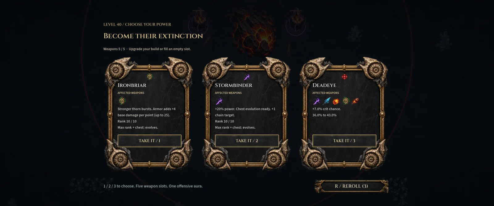

BUILD SOMETHING UNREASONABLE
Five slots. Countless possibilities.
Choose your weapons, chase their evolutions, and find relics that change the way your build works. Every upgrade is another decision. Every chest is another chance.
PRIVATE PLAYTEST · 0.9.0
The end of the world
has a health bar.
The Unmade Sky · Fight your way through a world coming apart.
Actual development screenshots. Some captures show earlier interface versions.
A WORLD OUT OF TIME. A SPECIES OUT OF LUCK.
Move. Your weapons do the rest. Carve through escalating hordes, collect relics, and turn a handful of weapons into an extinction-level build. Defeat each biome's boss, cross the rift, and face what waits at the end.

Choose your weapons, chase their evolutions, and find relics that change the way your build works. Every upgrade is another decision. Every chest is another chance.

Read their attacks, find your opening, and earn the next rift. Stay behind to gather the spoils—but the longer you linger, the harder the world pushes back.

Three expedition maps, each with three biome sections. Discover survivors and equipment, bank amber, and return with permanent upgrades.
DAILY CHALLENGE
The same daily seed. Randomly chosen rewards. The familiar reward reel decides what you get—then you make it work.
Push through more circuits and see how long you last. Records are local to your computer; Steam leaderboards and Cloud saves are not active.
PREPARING THE NEXT EXPEDITION
This private test focuses on complete runs, dependable progression, and an interface that fits. Help us find the rough edges before a wider release.